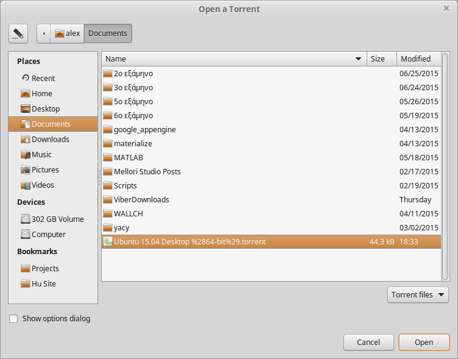
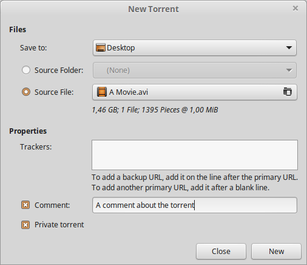
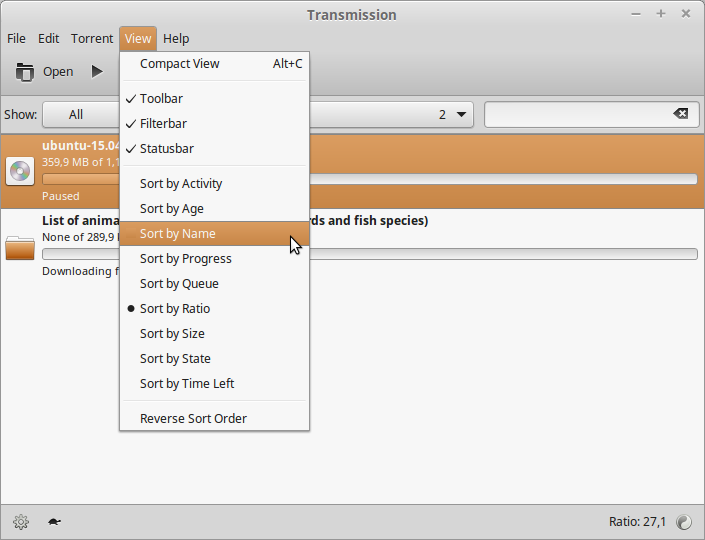
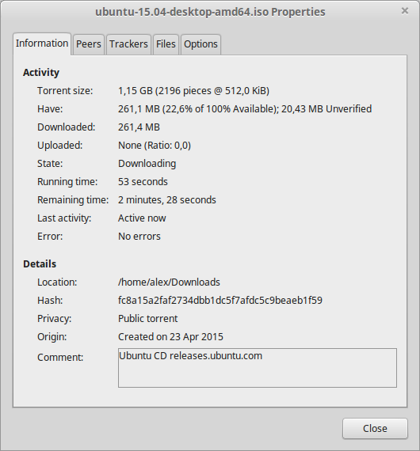
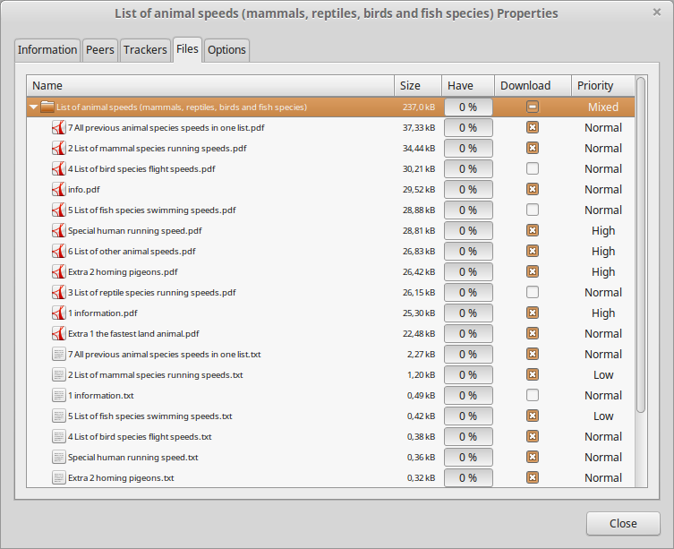

Welcome to Transmission!
Transmission is a BitTorrent client. It is used for peer to peer filesharing over the internet. BitTorrent is a fast way of transferring files, because everyone who downloads must also upload to others. This means speeds are only limited by the number of people connected to a given torrent - the more people the better!
How do I use it? |
|
|  |
Download your file's associated 'torrent file' (extension .torrent). These are commonly found at 'tracker' websites. Once you have the torrent file, click Open and select it, or simply drag it into Transmission - downloading should start immediately. Some sources provide the so-called 'magnet links' in order to download torrents. Transmission supports magnet links but you will probably have to associate them with Transmission from within your browser first. Alternatively, you can select File > Open URL... to manually add a magnet link. You can pause and resume transfers at any time, so long as the files remain in your download folder. It is good etiquette to share or 'seed' the file for a while (ie leave it uploading to others) once your download is complete. That's how you downloaded the files in the first place! You can use a torrent's Properties window to adjust download/upload preferences on the fly. |
Can I create my own torrents? |
|
|  |
Yes, choose 'New...' under the 'File' menu, and when the 'New Torrent' dialogue opens follow these steps: 1) Pull down 'Save To:' and select a folder where you want your new .torrent specification file to be created. (You can move it later if you want.) 2) To share (i.e. transmit) an entire folder of files, choose 'Source folder:' and select a folder. All files in that folder will be shared in the torrent. Alternatively, to share a single file, choose 'Source file:' and select a filename. (Later you can adjust where these source files are located by right clicking on the torrent and selecting 'Change location...'. The files and pointers to them will be relocated to where you specify.) 3) Enter the URL of one or more public or private Trackers that you have permission to use. Their address will look something like this: (http//domain:portnumber/announce). A BitTorrent tracker is a web service that regulates the communication between those downloading and uploading torrents. You will need at least one reference to a torrent tracker. (This list can be later edited in the torrent 'Properties' window under the 'Trackers' tab.) 4) Optionally enter a public 'Comment' to be attached to the torrent. This is a seen by you and those who download the torrent. 5) Optionally check the 'Private torrent' box to use a private torrent tracker. Private trackers are not for better privacy, but rather for better performance. They are not open to just anyone to use. This sets a flag in the info dict that marks that the client should only talk to the tracker listed (and not also talk directly to other peers). 6) Once you are done be sure to click 'New'. If you click 'Close' it will cancel the operation. Transmission will automatically optimize the torrent file for what you are sharing. |
How can I organize my torrents? |
|
|  |
Transmission allows you to sort your torrents by various criteria. Simply choose a Sort criterion in the View menu. You can also filter your torrents by their activity state. Simply enable the Filter bar in the View menu. |
Where can I find more detailed information on my torrents? |
|
|  |
Click the Properties icon in the toolbar, or simply double-click any transfer in the main window. The Properties window gives you:
|
Can I choose to download specific files? |
|
|  |
Yes, double click the multi-file transfer to open the Properties window, and then click the 'Files' tab. Simply check the boxes next to the files you want to download (the default is all of them). You can even set a download priority (High, Normal, Low) to each file, if you want some to finish faster than others. To do so, click on the priority column. |